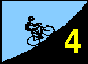
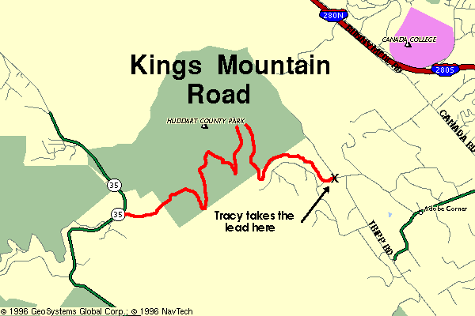

Clash of the Titans
And so he posted the fastest time for the third week in succession, crossing the stop sign in sub-20-minutes to smash the winning value from 1995 by almost 2 minutes, despite the gusting winds. He was the only one on the day to beat last year's mark, further evidence that he will be making himself known in cycling circles during the coming season. "He wasn't even breathing hard," coordinator Kevin Winterfield was left muttering in stunned amazement. In the women's event, Laura Stern arrived at Skyline first to make it a perfect 3/3 in Low-Key Hillclimbs for her, while Liz Beneshin of Alto Velo solidified her lead in the women's overall category. They're sizing Liz up for this year's yellow jersey, even as you read this.... |
Kevin Winterfield returns you to Kings Mountain, one of the top draws during The 1995 Hillclimbs. It's an area classic. The weekly Spectrum Cycles Ride traditionally attacks it each Saturday. It's smooth surface, steady grades, moderate auto traffic, and generous supply of shaded switchbacks make such popularity understandable.
Whether you're a Spectrum regular or have never even been to Skyline, gather for registration near the old store at the intersection of Tripp Road and Kings Mountain Road in Woodside, CA. At 10:30, riders will line up at the intersection of Kings Mountain Road and Greer Road. Kevin will then provide some brief (hear that Kevin???) words of inspiration, hop in his car, sound the horn, and the ride will be on.
The task at hand is straightforward -- climb. Last year a lead group stayed together most of the way, until breaking apart a mile from the finish. This year.... a solo attack from the first mile? A leg-rending group sprint up the final straight slope to the line? We'll see... If someone attacks near the bottom, do you push your aerobic limits, and struggle to follow? Or, do you let him go, maintain your own pace, and hope he fades?
Whether you're planning on battling for the lead of the pack, win the mini-race with those climbing with you near the end, or just want to enjoy the ride up and enjoy the company of others, plan on coming out for the Low Key Kings Mountain Hillclimb on the 26th.
| Distance: | 4.2 miles |
| Climbing: | 1570 feet |
| Format: | mass start |
| Start: | Register near old store at Kings Mountain Road and Tripp Road. Start will be at intersection of Kings Mountain Road and Greer Road. |
| Finish: | intersection of Kings Mountain Road and Skyline Blvd. |
| Reg Time: | 10:00 am to 10:20 am |
| Start Time: | 10:30 am |
| Fee: | 3 bucks |
| Weather: | strong winds and temperatures in the low-50's F |
| Map: |  |
djconnel@flash.net
{kind=link}